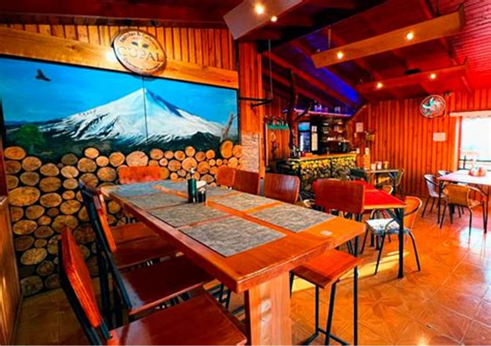
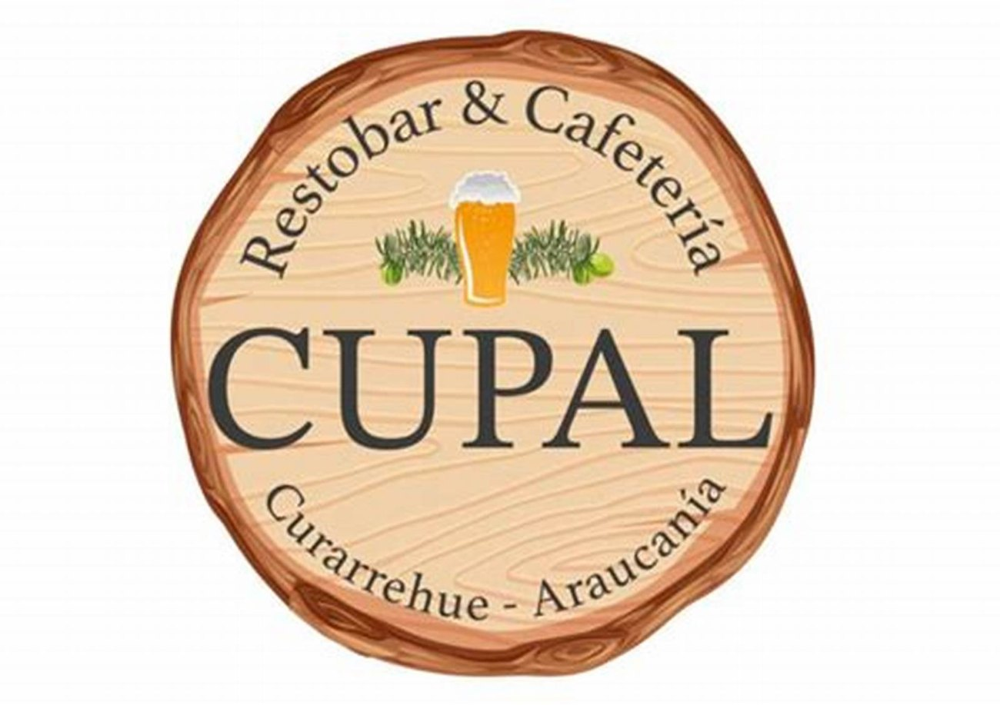
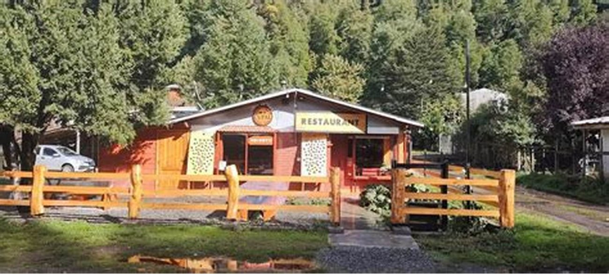
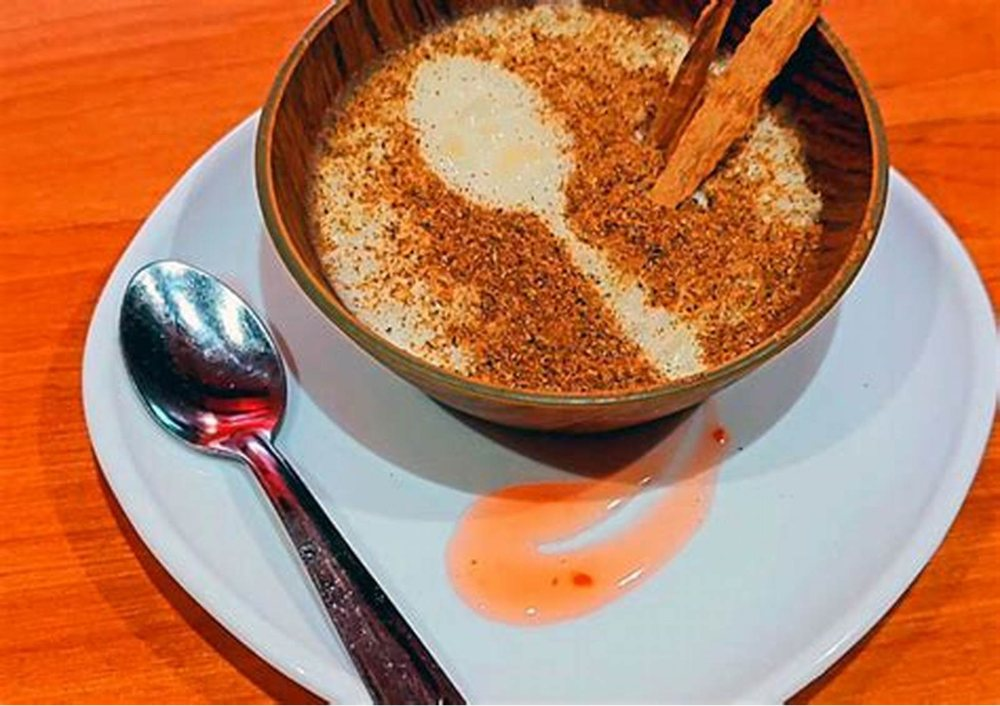

Restobar · Curarrehue
¿Alcanzo
a comer algo
caliente?
Es la pregunta que se hace todo el que baja de las termas pasadas las ocho, mirando el teléfono en el auto. Hoy no tiene respuesta. Debería tenerla en una línea.
- nota en Google
- 4,8
- reseñas
- 123
- horario publicado
- ninguno
La única pregunta que importa después de las ocho
La cocina
cierra a las…
Tres franjas del día. Qué sirve la cocina en cada una y a qué hora sale el último plato. Escrito así, el que va bajando decide antes de llegar al pueblo — y llega.
| Franja | Qué sirve la cocina | Último plato |
|---|---|---|
| 12–16almuerzo | falta: qué se sirve al mediodía Es la franja del que va subiendo a las termas y para antes. Come rápido y sigue. | falta |
| 16–20tarde | falta: si la cocina sigue abierta o sólo hay barra La franja olvidada. El que baja a las cinco no quiere esperar hasta las nueve para comer, y casi ningún local dice qué pasa a esa hora. | falta |
| 20–…noche | falta: qué se sirve de noche La franja que vale plata. El que llega tarde, con hambre y sin cocina en la cabaña, va a ir al único lugar que diga por escrito que está abierto. | falta |
Por qué la hora del último plato y no sólo el horario de cierre. No son lo mismo, y el cliente lo sabe: llegar a las 22:45 a un local que cierra a las 23:00 termina en «ya cerramos cocina». Publicar la hora del último plato evita esa conversación —que siempre termina mal— y es un dato que la cocina tiene en la cabeza todos los días.
La tabla está armada; faltan seis celdas. Se llenan en cinco minutos y quedan escritas para siempre.

La foto que ya tienen y explica el lugar entero
El volcán está pintado en la pared del salón
Es un mural, no una ventana, y por eso funciona: alguien decidió que el volcán entrara igual. Esa foto dice más del ambiente que cualquier adjetivo — mesas largas de madera, luz cálida, y un restobar de pueblo que se tomó el trabajo de pintarse su propio paisaje. Está en internet y no está en la ficha de Google, que es donde el que viene manejando desde Pucón la va a buscar.
El cliente del que nadie habla
Para llevar
al hospedaje
Media Curarrehue se arrienda por noche, y buena parte de esas cabañas no tiene cocina o tiene una que nadie quiere usar después de un día de termas. Ese grupo come todas las noches y compra sin mirar el precio: sólo necesita saber que existe la opción.
- Si se puede pedir para llevar
- falta: sí / no La pregunta base. Un «sí, para llevar también» escrito en la página cambia el volumen de las noches.
- Qué viaja bien
- falta: dos o tres platos No todo aguanta veinte minutos en una bolsa. Los que sí, dichos por la cocina, evitan que alguien se lleve el plato equivocado y quede con mala impresión.
- Cuánto se demora
- falta «Veinte minutos» es la diferencia entre esperar tranquilo y pensar que se olvidaron del pedido.
- Hasta qué hora se puede pedir
- falta Suele ser antes que el cierre de la cocina. Si es así, decirlo.
Nada de esto lo puedo escribir yo: no sé qué platos trabajan ni cuánto demoran. Lo que sí sé es que ninguno de sus competidores del pueblo tiene esta sección, y que el que arrienda cabaña sin cocina es el cliente más fiel que existe.
Curarrehue no se come de paso
Se para el auto, se entra y se come sentado
Mientras tanto, se pregunta por teléfono
+56 9 5308 0413
Es el número que sí está publicado en su ficha de Google. Toda esta página existe para que deje de ser la única forma de saber si la cocina está abierta.
Suyo, empezando por el logo
Cinco fotos de esta página son suyas: el salón, los tres platos y la fachada. Sólo el fondo de la portada, el aura y la cita son de banco libre, y están declarados en imagenes/FUENTES.txt.


falta: la carta con precios, y el salón de noche con la luz encendida
